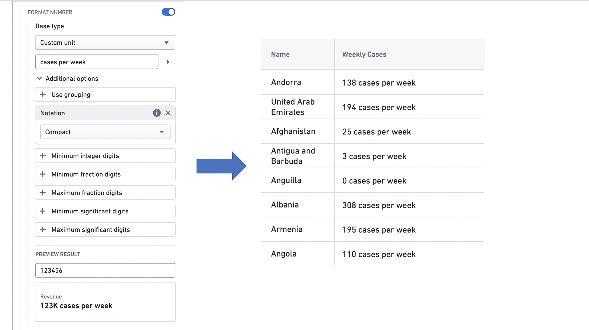
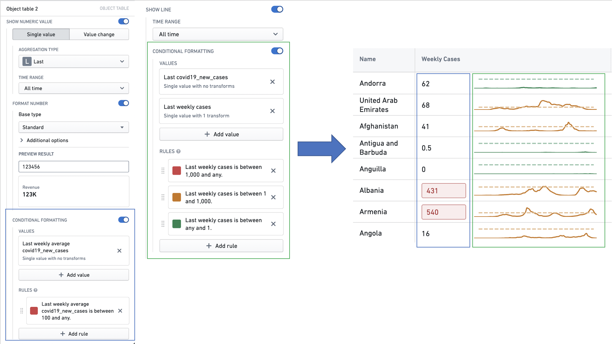

Workshop offers many formatting options across widgets that help users style their displays. In this section, we walk through two of these options: value formatting and conditional formatting.
Value formatting applies special formatting when rendering values in user-facing applications, making raw values more display-friendly. In Workshop, value formatting can be used to render values when setting up time series property columns in the Object Table widget and time series property displays in the Metric Card widget. This formatting is local to the Workshop module, and not global to the ontology. Learn more about setting up value formatting.
Numeric value formatting includes options to control the number of decimals displayed. Use the Fraction digits field to set the minimum and maximum digits shown after the decimal point; setting the maximum rounds longer values to that length without changing the underlying data. You can also control significant digits, integer digits, grouping separators, and notation. See Add value formatting for the full list of options.
The example below shows how value formatting is used to style the value displayed in an Object table column named Weekly Cases, that features the weekly number of COVID-19 cases observed in each country.

Conditional formatting applies rules to determine how numbers and sparklines are styled. In Workshop, conditional formatting can be used to style time series property columns in the Object Table widget and time series property displays in the Metric Card widget. This formatting is local to the Workshop module, and not global to the ontology. Learn more about setting up conditional formatting.
The example below shows how conditional formatting is used to style the summarized value and the sparkline displayed in an Object table column named Weekly Cases, that features the weekly number of COVID-19 cases observed in each country.
